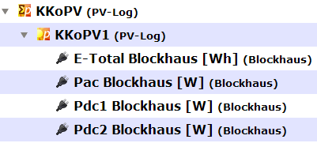
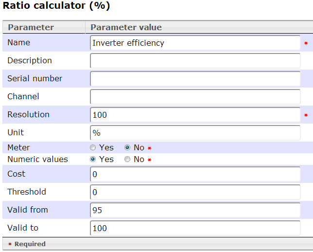
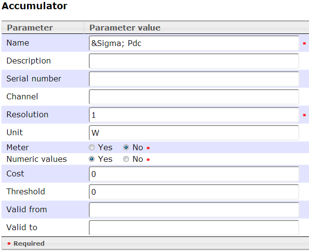
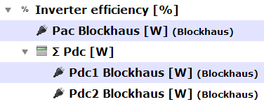
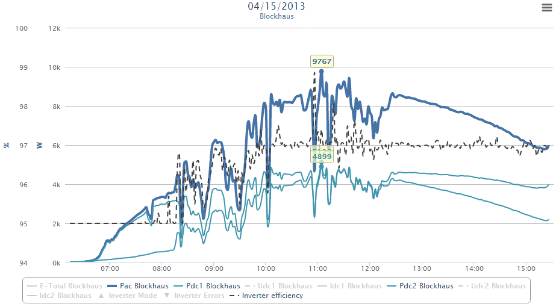

"By efficiency, we are really saying, what percentage of the power that goes into the inverter comes out as usable AC current (nothing is ever 100% efficient, there will always be some losses in the system).
This efficiency figure will vary according to how much power is being used at the time, with the efficiency generally being greater when more power is used." -- Solar-facts.com
The Inverter efficiency is calculated by: 
For this we need the special channel group Ratio

●
The Ratio calculator would return in the required channel combination values between 0 ... 1
To get readout values as percentage (0 ... 100), set resolution to 100.
●
The valid range 0 ... 100 avoid values values over 100%, which is possible by inaccurate readings.
So the result will be aligned into the range.
Please note: The performance ratio model accepts only exact 2 sub channels for correct operation!
If your inverter have more than one MPP tracker (as mine), we need another special group to sum all PDC? up: Accumulator

HTML entities are fine here, e.g. for the name.
Define your required channels, put this all together and you should have the following definition:

Please note:
● The real sensor channels for PAC, PDC1, PDC2 etc. must be defined for each inverter!
●
The grouping channels "Inverter efficiency [%]" and "Σ Pdc [W]" must be defined only once!
They find out on request their correct sub channels from their position in the channel tree.
If you want to have a more detailed result for efficiency, set the "valid from" for example to 95:

There is very good to see, that the efficiency (black dashed) is after noon about 97%!
All values below 95% are "raised" to 95%, so just ignore them until 8:00
Created with the Personal Edition of HelpNDoc: Produce electronic books easily